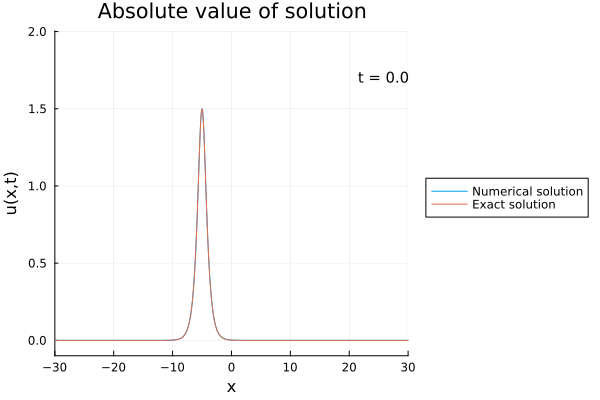

Dokumentation Numerikpraktikum
In diesem Julia-Programm wird das in [1] beschriebene Finite-Differenzen Schema implementiert und mit einem expliziten Schema verglichen.
Die Nichtlinear Schrödingergleichung (NLS) ist eine partielle Differentialgleichung deren Lösung $u(x,t): \mathbb{R} \times \mathbb{R} \to \mathbb{C}$ die Gleichung
\[i u_t - u_{xx} + \lambda |u|^2 u = 0 \\ u(x,0) = \phi(x)\]
erfüllt. Dabei ist $i = \sqrt{-1}$ und die Ableitungen sind als Index geschrieben. Dabei ist $\lambda$ ein reeler Parameter und $\phi: \mathbb{R} \to \mathbb{R}$ eine gegebene Funktion.
Mathematischer Hintergrund
Lösungen der NLS erhalten dabei die zwei Größen:
\[\int_{\mathbb{R}} |u|^2 \; dx = const,\\ \int_{\mathbb{R}} \left(\frac{1}{2}|u_{x}|^2 + \frac{\lambda}{4}|u|^4\right)\; dx = const.\]
In [1] wird ein Finites Differenzenschema angegeben, dass diese beiden Größen erhält und welches implementiert wird. Allerdings wird in diesem Paper nicht die Konvergenz des Schemas gezeigt und numerisch kann dies auch nicht beobachtet werden. Allerdings erhält es die beiden oben genannten Größen.
Eine Lösung für den Parameter $\lambda = -2$ ist zum Testen gegeben mit
\[u(x,t) = \frac{3}{2}\exp\left(i(\frac{5}{4}t - x)\right) sech\left(\frac{3}{2}(x+5) - 3t\right).\]
Das Schema in [1] wird verglichen mit dem expliziten Schema
\[\frac{i}{\Delta t}(U^{k+1} - U^{k}) - \frac{1}{|\Delta x|^2}AU^k + F_k(U^k) = 0\]
mit $A$ als Finite-Differenzen Matrix für die zweite Ableitung und $U^k$ als Approximation im $k$-ten Zeitschritt. Die Funktion $F$ ist gegeben durch
\[(F_k(U)))_j = \frac{\lambda}{4}(|U_j|^2 + |U_j^k|^2)(U_j + U_j^k)\]
mit $j$ als Index für den Vektor.
Code Dokumentation
Main.NLS.first_conservation — Methodfirst_conservation(U::AbstractMatrix{<:Complex})Compute the first conserved quantity of the NLS-equation.
Description
This function calculates the first integral, the first integral is given by
\[\int |u|^2 \; dx\]
It assumes:
- Rows of
Urepresent the spatial variable. - Columns of
Urepresent the temporal variable.
The function computes:
- The first integral as the sum of squared magnitudes (norm) of the solution matrix
Ufor each time step. - The maximum and minimum values of the integral across the spatial domain.
- The dissipation, defined as the difference between the maximum and minimum values.
Arguments
U::AbstractMatrix{<:Complex}: A complex-valued matrix where rows represent spatial variables and columns represent temporal variables.
Returns
A tuple with the following values:
first_integral::Vector{Float64}: The computed first integral for each time step.maximal_value::Float64: The maximum value of the first integral.minimal_value::Float64: The minimum value of the first integral.dissipation::Float64: The difference between the maximum and minimum values (indicating dissipation).
Example
# Example usage
U = rand(ComplexF64, 100, 10) # Random complex-valued matrix with 100 spatial points and 10 time steps
first_integral, max_val, min_val, dissipation = first_conservation(U)
println("First integral: ", first_integral)
println("Maximum value: ", max_val)
println("Minimum value: ", min_val)
println("Dissipation: ", dissipation)Main.NLS.schroedingereq — Methodschroedingereq(init_val::Function, dx::Real, dt::Real; lambda::Real = -2, epsilon::Real = 1e-7, T::Real = 6.0) -> Matrix{ComplexF64}Solve the non-linear Schrödinger equation using the finite-difference method described in "Finite-Difference Solutions of a Non-linear Schrödinger Equation" by Delfour, Fortin, and Payre (1981) [1].
This function implements a Crank-Nicolson time-stepping scheme combined with a fixed-point iteration to handle the non-linearity in the Schrödinger equation.
Mathematical Context
The Schrödinger equation with non-linearity can be written as:
\[i u_t + u_{xx} + \lambda |u|^2 u = 0\]
with
uas the function to solveithe imaginary unit withi^2 = -1xas the spatial variabletas the time variable\lambdaas an equation parameter
The function discretizes the spatial domain with a step size dx and the time domain with a step size dt. It uses a fixed-point iteration to approximate the non-linear term at each time step.
The spatial domain is fixed with the interval (-30, 30).
Arguments
init_val : Function: Function which computes the initial valuesdx : Real: mesh size in the spatial variabledt : Real: time step size
Keyword Arguments
lambda : RealParameter of the NLS-Equation, default = -2.0epsilon : RealError threshold for the fix point iteration, default = 1e-7T : RealTotal simulation time, default = 6.0
Returns
U : Matrix{ComplexF64} : The rows correspond to the spatial value and the columns correspond to the time values
References# References
[1] M. Delfour, M. Fortin, G. Payre: Finite Difference Solutions of a Non-linear Schrödinger equation. Journal of Computational Physics 44, 277-288 (1981)
Main.NLS.second_conservation — Methodsecond_conservation(U::AbstractMatrix{<:Complex}, dx::Real; lambda::Real = -2)Compute the second conserved quantity for a numerical solution of the NLS-equation. The second conserved quantity is given by:
\[\int \frac{1}{2} |u'|^2 + \frac{\lambda}{4}|u|^4 \; dx\]
Description
This function calculates the second integral, which typically corresponds to the energy-like conservation quantity in numerical schemes, assuming that:
- Rows of
Urepresent the spatial variable. - Columns of
Urepresent the temporal variable.
The function ensures the spatial step size dx is positive. It computes:
- The second integral as a discrete analogue of the integral.
- The maximum and minimum values of the integral across the temporal domain.
- The dissipation, defined as the difference between the maximum and minimum values.
Arguments
U::AbstractMatrix{<:Complex}: A complex-valued matrix where rows represent spatial variables and columns represent temporal variables.dx::Real: The spatial step size. Must be a positive real number.lambda::Real: Parameter of the NLS
Returns
A tuple with the following values:
second_integral::Vector{Float64}: The computed second integral for each time step.maximal_value::Float64: The maximum value of the second integral.minimal_value::Float64: The minimum value of the second integral.dissipation::Float64: The difference between the maximum and minimum values (indicating dissipation).
Errors
- Throws an
ErrorExceptionifdxis not a positive real number.
Example
# Example usage
U = rand(ComplexF64, 100, 10) # Random complex-valued matrix with 100 spatial points and 10 time steps
dx = 0.1 # Spatial step size
second_integral, max_val, min_val, dissipation = second_conservation(U, dx)
println("Second integral: ", second_integral)
println("Maximum value: ", max_val)
println("Minimum value: ", min_val)
println("Dissipation: ", dissipation)Der Code kann ausgeführt werden, indem die Datei NLS.jl im Ordner src ausgeführt wird.
Ergebnisse
Das Finite Differenzen Schema aus [1] erhält die beiden oben genannten Größen, während das explizite Finite Differenzen Schema diese nicht erhält. Weiterhin konnte beobachtet werden, dass das explizite Verfahren sehr instabil ist und nur für sehr kleine Gitterweiten und noch kleinere Zeitschritte plausible Werte liefert. Das explizite Verfahren erhält auch keine der beiden Erhaltungsgrößen.
Auch kann mit numerischen Experimenten nur eine Konvergenz der Differenz der Normen beobachtet werden, während Norm der Differenz recht hoch ist und das Verfahren gegen eine andere Lösung konvergiert als die Testlösung. Im Paper [1] wird die Konvergenz behauptet, aber nicht bewiesen.
Wir sehen auch, dass eine geringer Fehlertoleranz bei der Fixpunktiteration einen besseren Werten der Erhaltungssätze führt.
Visualisierung
 

Transparenz-Hinweis KI
Der Code für die NLS-Gleichung wurde ohne Zurhilfenahme von KI erstellt. Die Dokumentation des Codes und das Bash-Skript zur Ausführung wurden mit Hilfe von ChatGPT erstellt und menschlich nochmal geprüft und ggf. angepasst.
Referenzen
[1] M. Delfour, M. Fortin, G. Payre: Finite Difference Solutions of a Non-linear Schrödinger equation. Journal of Computational Physics 44, 277-288 (1981) Journal